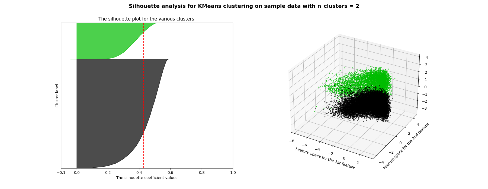
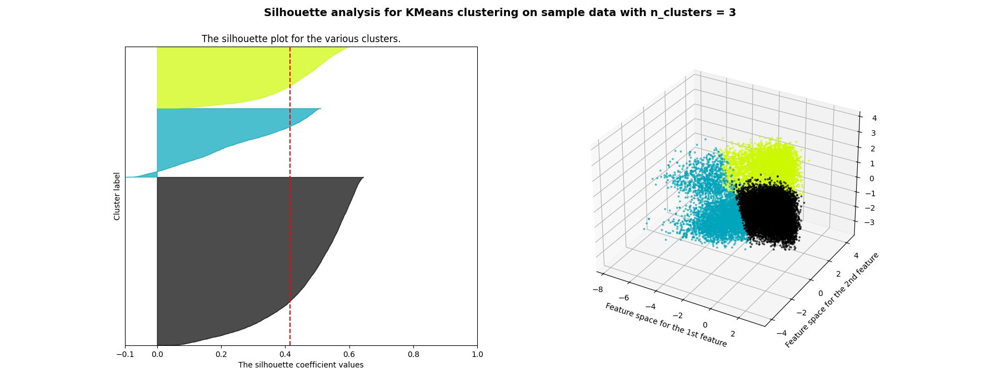
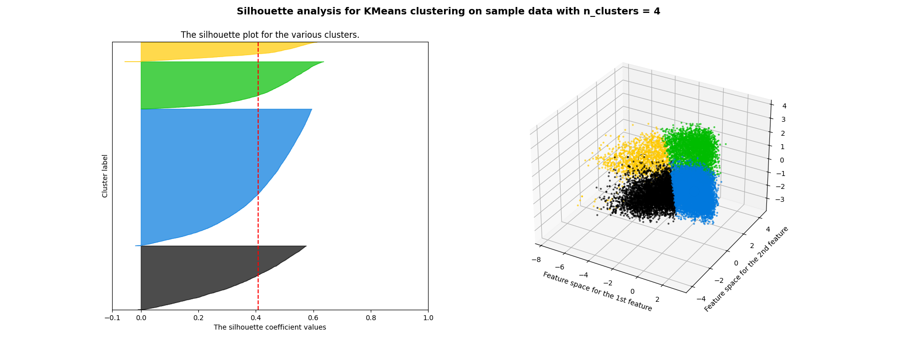
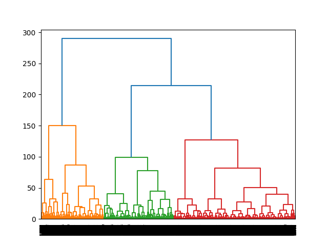
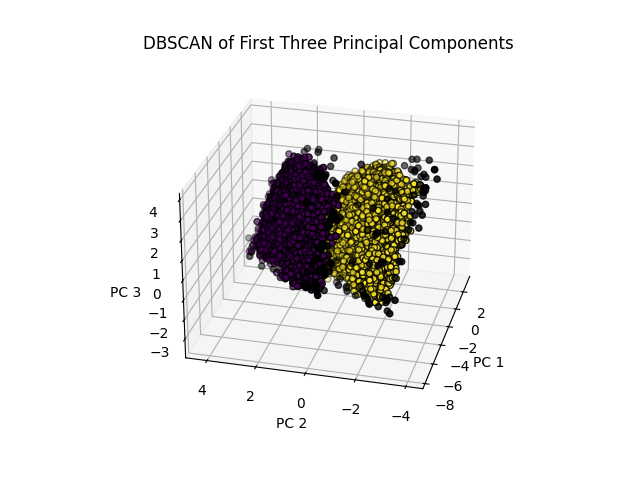

Clustering
What is clustering?
Clustering is somewhat self explanatory. Even if data is unlabeled, it often has patterns in it. Some of these patterns can form clusters, or groups of datapoints all near each other. When these patterns emerge from data, they are often seen as similar data points to one another and might receive the same label.
What types of clustering are there?
There are several different types of clustering methods, but three that we will focus on are partitional clustering, hierarchical clustering, and density clustering.
Partitional Clustering
Partitional clustering is a method that sorts data into non-overlapping groups. One of the most common methods for partitional clustering is called K-Means clustering. In this method k centroids are chosen at random. They are then iteratively updated according to the data until the distance from each datapoint to the closest cluster is minimized.
Hierarchical Clustering
Imagine a family tree but for data. Hierarchical clustering aims to build a family tree of sorts. The higher up in the family tree, the larger a cluster of data might be. These larger clusters are slowly broken down into more and more smaller clusters where the contained data points are closer together.
Density Clustering
Density clustering uses tightly grouped sets of points to form clusters. It is different from KMeans in that the proximity of those points determine the cluster. Because of this, clusters can take any sort of shape so long as there is tightly packed data all along the cluster.
Clustering on the Spotify Data
Data Preparation
To prepare for data clustering, we first remove labels, normalize the data, and perform PCA. These steps are outlined in the PCA tab here.
KMeans
All code can be found
here and data
here.
First for kmeans clustering, we find the optimal value for k using a method called the Silhouette Method. Below are plots for k = 3, 4, and 5.



The results are fairly close, but the average silhouette coefficient value (shown with the red line in each left plot) for k = 2 is the highest. This means that with two clusters, there is the greatest average distance between a given point and neighboring clusters. Thus the clusters are best with k = 2.
Hierarchical Clustering
Results from hierarchical clustering are below:

Compared to k means, the obvious difference is that hierarchical clustering provided three main groups. One of the obvious downsides to computing a dendrogram on thousands of datapoints is the illegibility of the x labels, though it would be useful for a smaller number of records to look at more closely.
DBSCAN
Performing DBSCAN on the data produces the following plot:

This clustering is highly similar to the Kmeans clustering with the addition of outliers. The two clusters are represented as purple and yellow while the black points represent outliers. A downside to DBSCAN is that computation time was much higher for DBSCAN than KMeans.
Conclusions
The largest take away from clustering the data is that there do exist cluster. Running correlational analyses on specific variables and creating scatter plots of the data showed no correlations, but clustering showed there to be at least two distinct groups in the spotify data. It will be interesting to dig further into the data to see what those are.